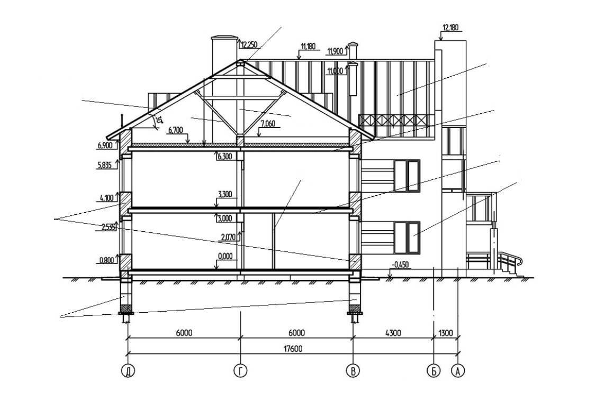
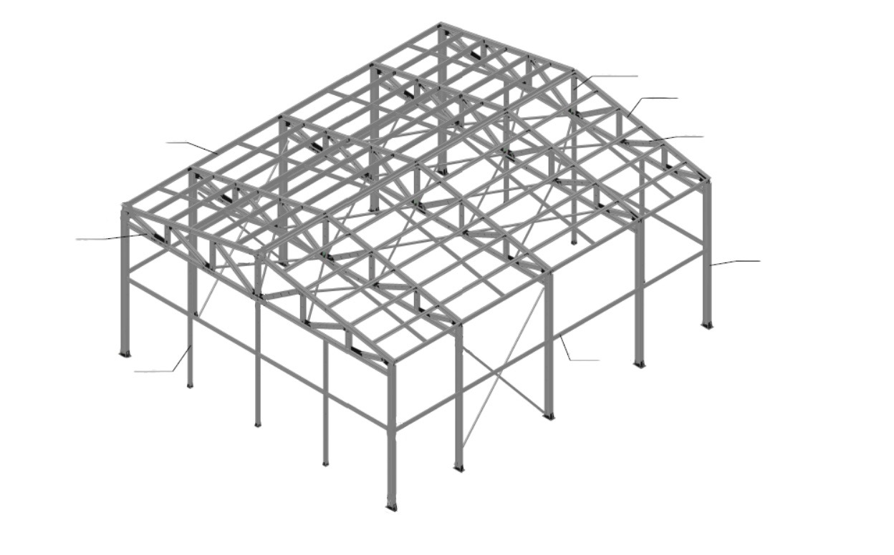
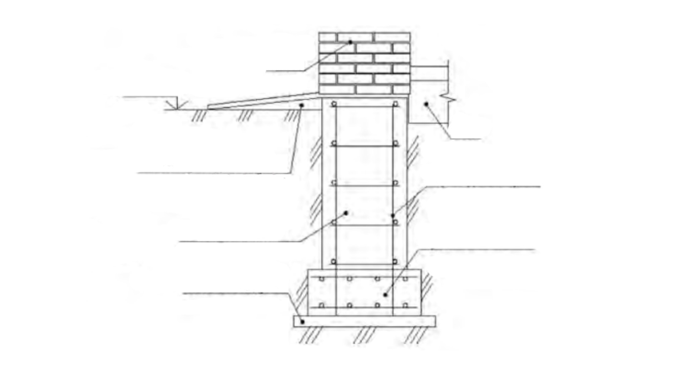
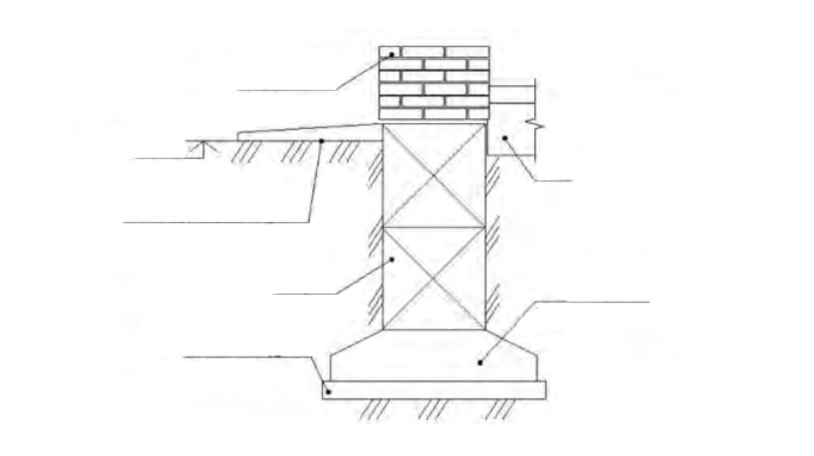
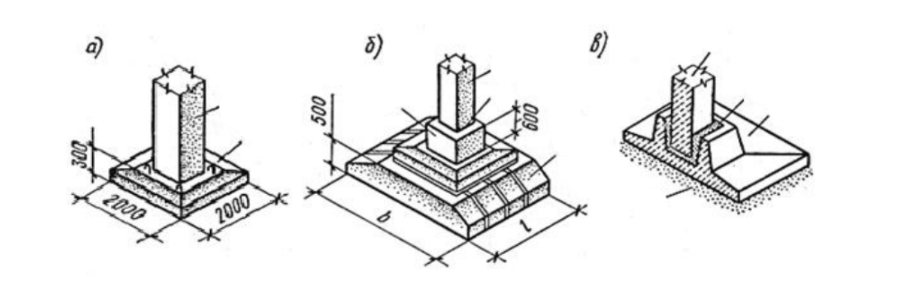
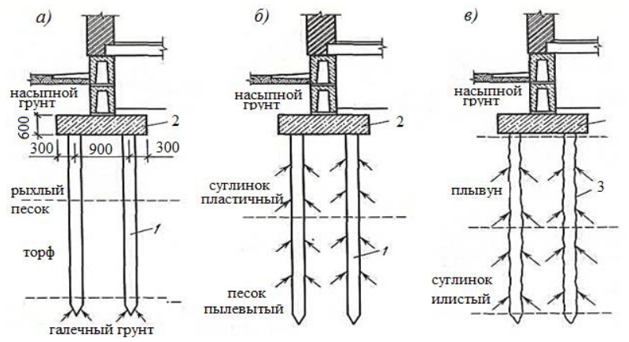
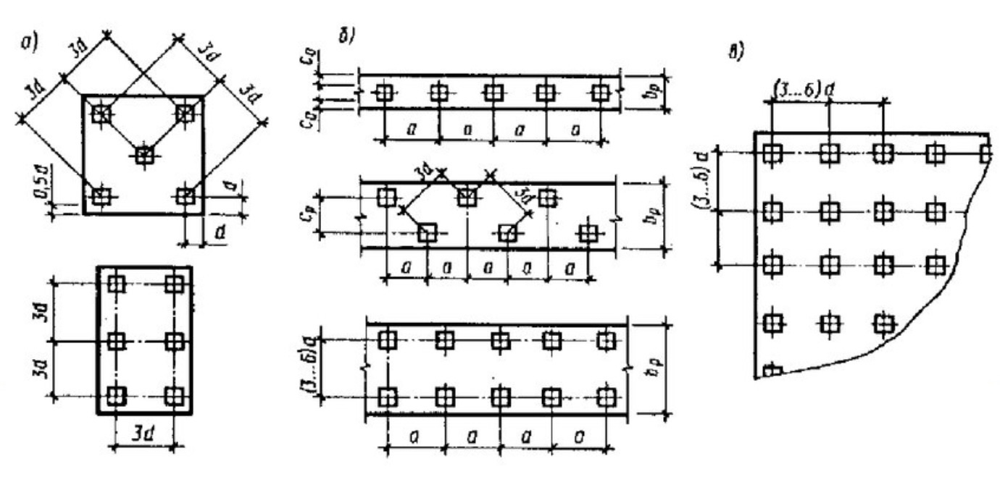
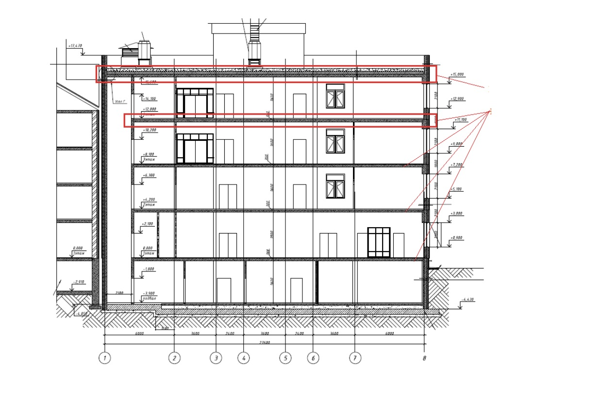
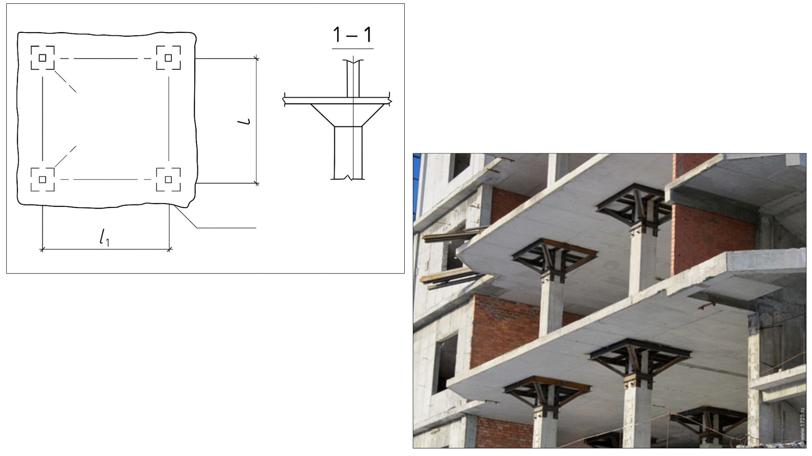
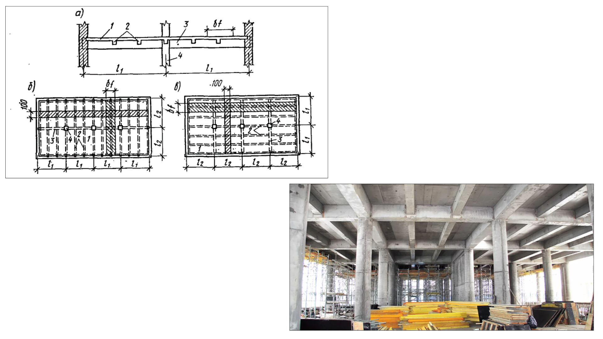

Анализируем чертежи и схемы основных конструктивных элементов здания
Каждое здание состоит из множества конструктивных элементов, которые вместе образуют его конструктивную структуру. Эти элементы выполняют разные функции: несущие, принимая на себя нагрузки, и ограждающие, изолируя внутренние помещения от внешней среды. В этом уроке вы освоите основные конструктивные элементы зданий, их назначение, функции и виды.

Первое, с чего мы начнем урок – это с просмотра видео. В нем я расскажу как выглядят конструктивные элементы зданий на чертежах.
Конструктивные элементы здания
Все элементы здания можно разделить на две группы:
- Несущие конструкции – принимают нагрузки от вышележащих частей здания, от ветра, снега и других воздействий. К ним относятся фундаменты, стены, колонны, перекрытия.
- Ограждающие конструкции – изолируют помещения от внешней среды и соседних помещений. Это стены, окна, двери, перегородки и крыша.
Некоторые конструкции могут быть совмещенными, то есть выполнять обе функции одновременно. Например, перекрытия не только несут нагрузки, но и отделяют этажи друг от друга.
Встроенное упражнение — сохранен текст
Статическое представление
TestCards
Текстовые фрагменты упражнения извлечены с исходной встроенной страницы. Проверка ответов и анимация здесь не работают.
- Какие элементы относятся к несущим конструкциям здания?
- Перегородки
- Фундамент
- Перекрытия
- Лестницы
На образце ниже смотрите основные конструктивные элементы здания. Наведите на желтую точку, чтобы ознакомиться с определенным элементом.
Иллюстрация к уроку
Изображение сохранено с исходной встроенной страницы.

На следующем образце указаны конструктивные элементы промышленного каркасного здания.
Иллюстрация к уроку
Изображение сохранено с исходной встроенной страницы.

Фундаменты: назначение, виды, конструктивные особенности
Фундамент – это подземная часть здания, принимающая на себя нагрузки от всей конструкции и передающая их на грунт. Нижняя плоскость фундамента, которая непосредственно контактирует с основанием, называется подошвой фундамента.
Классификация фундаментов
Смотрите в памятке ниже классификацию фундаментов в зависимости от материалов, технологии возведения и конструктивной схемы.
Материал к уроку (PDF)
Классификация фундаментов
PDF получен с исходной страницы. Поля для названия организации и других персональных данных оставлены пустыми.
Теперь давайте проверим, как хорошо вы понимаете схемы фундаментов и их соотношение с реальным объектом.
Встроенное упражнение — сохранен текст
Статическое представление
Connect-cards
Текстовые фрагменты упражнения извлечены с исходной встроенной страницы. Проверка ответов и анимация здесь не работают.
- Типы фундамента
- Типы фундаментов
- Внимательно изучите схему фундамента в левой части столбца и соедините ее с изображением реального фундамента
Ленточные и столбчатые фундаменты
Могут быть монолитными и сборными. Сборные ленточные фундаменты собирают из железобетонных блоков.
На образцах ниже указаны элементы конструкций фундаментов. Наведите на желтую точку, чтобы ознакомиться с определенным элементом.
Иллюстрация к уроку
Изображение сохранено с исходной встроенной страницы.



Свайные фундаменты
Применяются при строительстве на неустойчивых, слабых грунтах или при больших нагрузках на здание. Они состоят из свай, которые заглубляются в прочные грунты, и ростверка, объединяющего их в единую конструкцию.
Типы свай по характеру работы:
- Сваи-стойки – передают нагрузку на прочный грунт.
- Висячие сваи – держатся за счет трения с окружающим грунтом.
- По способу установки:
- Забивные – погружаются в грунт с помощью механизированного оборудования.
- Набивные – устраиваются на месте строительства путем бурения и заполнения бетоном.
Иллюстрация к уроку
Изображение сохранено с исходной встроенной страницы.

Свайные фундаменты в плане могут состоять:
- Из одиночных свай — под опоры;
- Лент свай — под стены здания, с расположением свай в один, два и более рядов;
- Кустов свай — под тяжело нагруженные опоры;
- Сплошного свайного поля — под тяжелые сооружения с равномерно распределенными по плану здания нагрузками.
Смотрите ниже схемы свайных фундаментов в плане.
Иллюстрация к уроку
Изображение сохранено с исходной встроенной страницы.

Самое время закрепить материал по теме свайных фундаментов. Внимательно изучите схему и определите тип представленных свай.
Встроенное упражнение — сохранен текст
Статическое представление
TestCards
Текстовые фрагменты упражнения извлечены с исходной встроенной страницы. Проверка ответов и анимация здесь не работают.
- Какой вид свай изображен на чертеже?
- железобетонная забивная свая
- буронабивная свая
- винтовая свая
Перекрытия и покрытия
Перекрытие – это горизонтальная конструкция здания, разделяющая этажи и воспринимающая нагрузки от находящихся выше конструкций, людей, мебели, оборудования. Оно передает нагрузки на стены, колонны или другие несущие элементы.
Покрытие – верхняя ограждающая конструкция, отделяющая помещения здания от наружной среды и защищающая их от атмосферных воздействий.
На образце ниже указаны расположения покрытия и перекрытия. Наведите на желтую точку, чтобы ознакомиться с определенным элементом.
Иллюстрация к уроку
Изображение сохранено с исходной встроенной страницы.

Классификация перекрытий и покрытий
Смотрите в памятке ниже классификацию перекрытий и покрытий.
Материал к уроку (PDF)
Классификация перекрытий и покрытий
PDF получен с исходной страницы. Поля для названия организации и других персональных данных оставлены пустыми.
Смотрите ниже схему монолитного безбалочного перекрытия.
Иллюстрация к уроку
Изображение сохранено с исходной встроенной страницы.

Теперь перейдем к конструктивной схеме монолитных ребристых перекрытий с балочными плитами.
Иллюстрация к уроку
Изображение сохранено с исходной встроенной страницы.

Вы уже многому научились, давайте устроим игровую паузу:) Попробуйте, основываясь на схеме выше, собрать изображение ребристого перекрытия. Если вы будете испытывать сложность, то всегда сможете вернуться к пазлу и продолжить с того момента, с которого начали.
Сборные железобетонные перекрытия
Состоят из заводских плит, укладываемых на несущие стены или балки.
Материал к уроку (PDF)
Типы сборных плит:
PDF получен с исходной страницы. Поля для названия организации и других персональных данных оставлены пустыми.
Стены
Классификация стен
Смотрите в памятке ниже классификацию и конструктивные элементы стен.
Материал к уроку (PDF)
Классификация стен
PDF получен с исходной страницы. Поля для названия организации и других персональных данных оставлены пустыми.
Вам осталось выполнить еще одно упражнение на знание важных определений. Помните, что без понимания сути этих терминов невозможно освоить тему конструктивных элементов зданий.
Встроенное упражнение — сохранен текст
Статическое представление
Connect-cards
Текстовые фрагменты упражнения извлечены с исходной встроенной страницы. Проверка ответов и анимация здесь не работают.
- Новая статья WEB АРМ
- Фундамент
- Передает нагрузку здания на грунт
- Перекрытие
- Разделяет этажи, несет нагрузку
- Принимает нагрузку здания на грунт
- Отводит воду от стены
- Защищает нижнюю часть стены от влаги
- Проверьте себя на знание определений
- Выберите верное утверждение
- Вы неплохо справились🥳
{kind=link}
{kind=link}
{kind=link}
{kind=link}
{kind=link}
{kind=link}
{kind=link}
{kind=link}
{kind=link}
{kind=link}